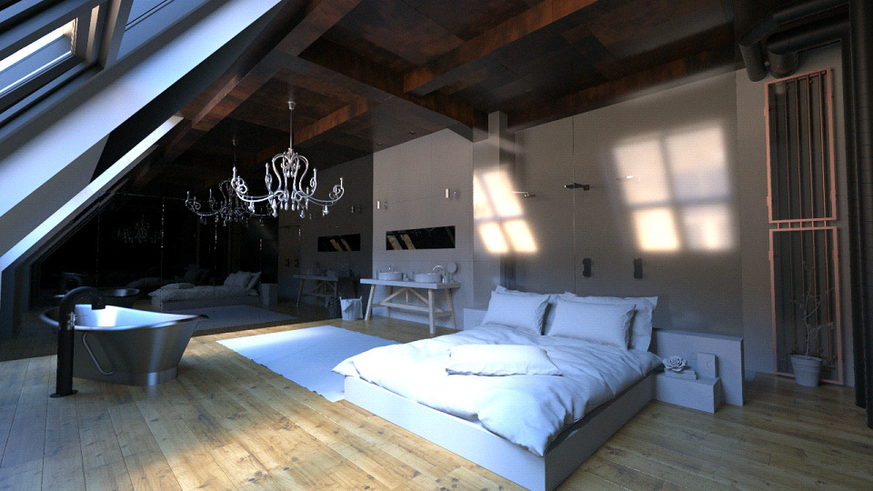
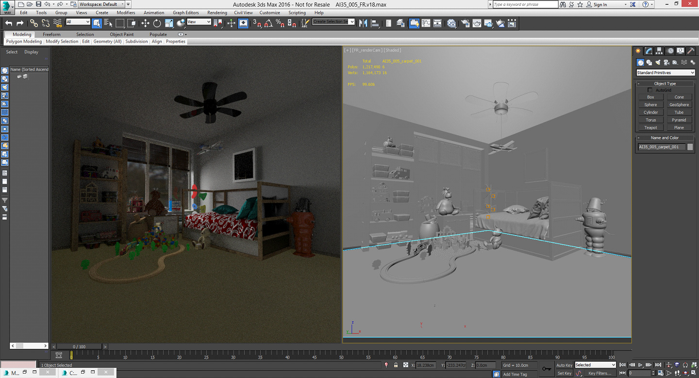
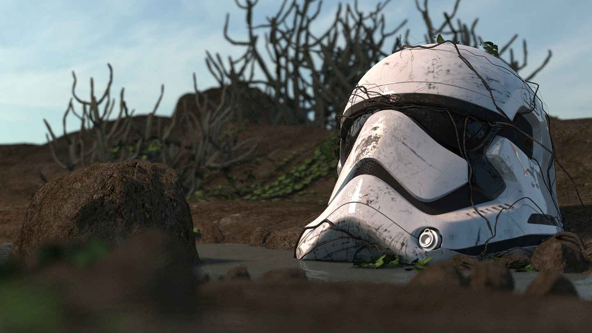
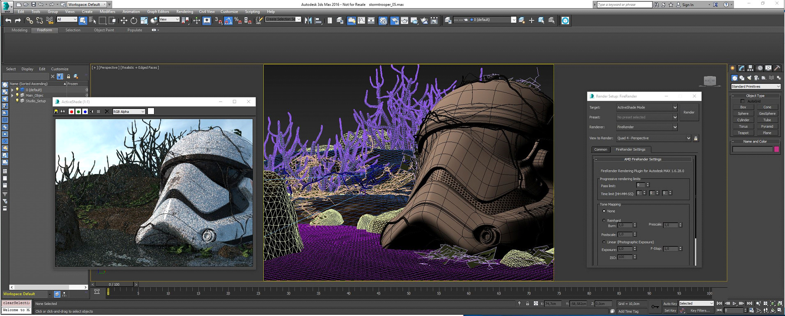
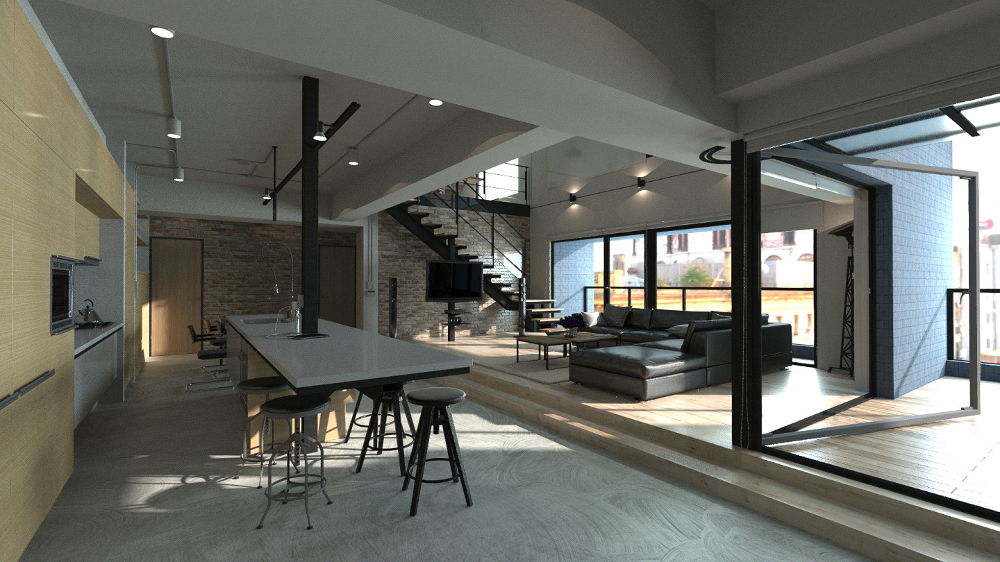

For designers, artists, and creatives, who want to make stunning renderings at no cost, AMD FireRender for Autodesk® 3ds Max® is a physically accurate raytracing plugin that provides a simple to use, deeply integrated Autodesk® 3ds Max® experience, with an extensive beautiful material library.


10 Key Features You’ll Love
- It's Fast. Out of the box, the global illumination engine delivers physically accurate, photorealistic renderings, without any prior knowledge of complicated rendering or material setups.
- Built on OpenCL™, it's Hardware Agnostic, so it runs on virtually any hardware, including any combination of GPUs and CPUs.
- It's Easy to use. A push-button global illumination solution, it seamlessly combines physically accurate materials with existing 3ds Max® maps; existing 3ds Max® photometric lights can be used as well. Also, to help newcomers, most existing scenes are rendered without need for major rework.
- Integrated Materials are simple to use and editable in the 3ds Max® Material Slate Editor as nodes.
- It comes with a helpful and beautiful Material Library, ready to use. Artists can use, easily adjust, and quickly learn to make their own.
- Active Shade Viewport Integration means you can work with FireRender in real time, so you can see your changes as you make them.
- Physically Correct materials and lighting allow you to make true design decisions with global illumination—including caustics.
- Emissive And Photometric Lighting, as well as lights from HDRI environments, let you blend a scene in with its surroundings.
- Plug your laptop in and render even faster with AMD XConnect™ Technology.
- It’s Free








The AMD FireRender engine is a full-fledged unbiased path tracing renderer that also includes a native physically-based material system.

Video Tutorials
Tutorial 1:
Quick start video; walk through of how to get setup, how to use the material library, quickly set up lights, and get a rendering. Using the car asset that is available for download.
Tutorial 2:
Import geometry, setup environment, add additional lights, setup camera, render and save images.
Tutorial 3:
Creating physically accurate materials with AMD FireRender in Autodesk 3ds Max - glass and physical properties
Tutorial 4:
Creating realistic materials with AMD FireRender in Autodesk 3ds Max - part 2 metals
Download
Download the FireRender Max Plugin here.
Material Library
View the Materails Library here.
Example Scenes
User Guide
View the Online User Guide here.
Feedback and Support
Please post to the Autodesk forum.
Hardware & Support Information
- Autodesk® 3ds Max® 2016 with Service Pack 3+
- A PC with Windows® 7, Windows® 8, Windows® 8.1 or Windows® 10 installed.
- Hardware Support: Runs on both GPUs and CPUs. OpenCL™ 1.2 required for GPUs.
- For a system report and to find out if your hardware supports OpenCL™ 1.2, run GPU-CAP-Viewer.
- Recommended Hardware: AMD FirePro™ W or S series or Radeon™ graphics card of the “Southern Islands” generation or beyond. Examples: FirePro™ W9100, W8100, W7100 GPUs; Radeon™ 7950 GPU, Radeon™ 7970 GPU, Radeon™ R280 GPU, Radeon™ R290X GPU, etc.